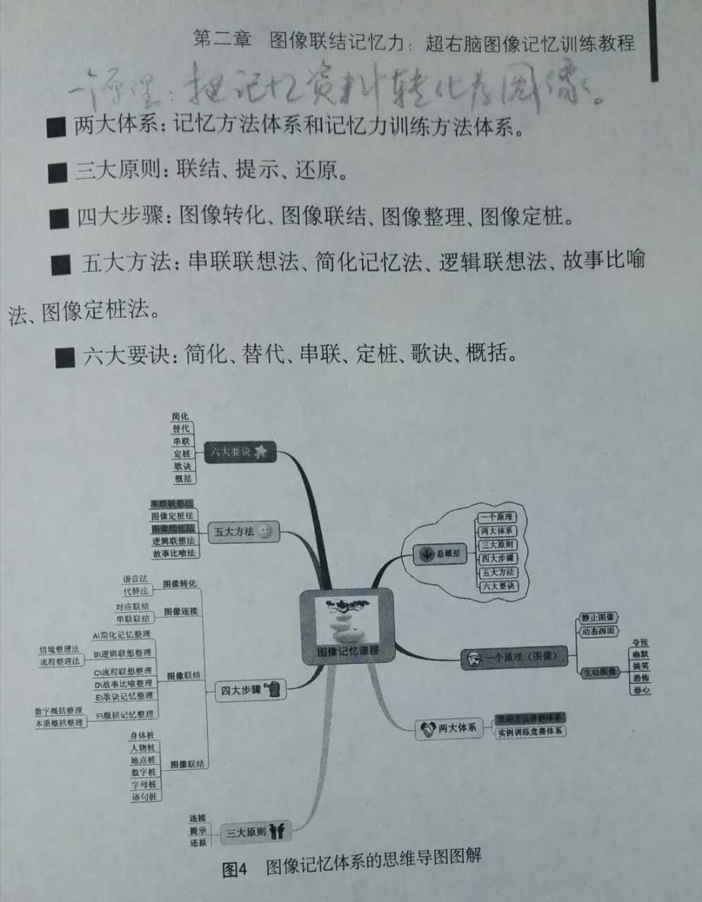

1 物像：记忆的根本；
2 联想：记忆的关键；
3 奇特：记忆的秘诀；
4 谐音：记忆的窍门；
1、早上6:00-7:00，清晨起床后，大脑经过一夜休息，消除了疲劳，没有新的记忆干扰，是学习和记忆的高效期。在这一时段，适宜学习一些难以记忆但必须记忆的内容。
2、上午8：00-10：00，大脑极易兴奋，适宜学习需要周密思考和分析判断的内容，也是攻克难题的好时光。
3、下午6：00-8：00，大脑神经活跃，是回顾复习全天学习内容、知识归纳分类和整理笔记的黄金时间。
4、晚上21:00，晚上临睡前一小时，是一天中第四个学习高效期。
首先要养成即时回想的习惯，也就是说在学习后一小时之内用“想”的方式来及时复习。比如课间十分钟的休息时，不要马上跑出去玩，而是花近一分钟的时间坐在 座位上，用“默想”的方式将上节课所讲内容复习一下。这样并不会耽误你太多休息和娱乐的时间，只要让叫你去操场踢球的伙伴稍稍等你一会，就可以迅速地完成 这些最接近学习时间的回忆过程，虽然时间很短暂，却可以及时将新接受的知识固定下来，如果错过了及时记忆的机会，再要回忆起来所花费的时间就要长得多，也 困难得多了。
另一个最好的重复记忆的时间是在晚上临睡前，躺在床上即将入睡的时候用默想的方式将一天所学习的内容进行一次回忆效果非常的好。因为人体受“生物钟”的制 约，晚上临睡前是大脑最清醒，也是最适合记忆的阶段。并且，睡前在大脑中闪过的信息会在睡眠时在潜意识中加深到你的印象中。这种劳动是不知不觉地，却十分 地有效。有没有发现小猫、小狗还有小婴儿都非常地喜欢睡觉，一天要睡上十几个小时，这是因为初生的动物和人类都会接受很多新的信息，太多的信息要想消化掉 就需要靠睡眠时间来进行。所以说，这个时机浪费掉，就等于浪费掉了几个小时的潜意识记忆的时间，太可惜了。
早上睡醒后也是一个记忆的黄金时段，不要忙着穿衣起床，花上两分钟，盘腿坐在床上回忆昨天一天所学习的内容，尽量详细。这样一来，你前一天所学到的知识，不管多么的庞杂和丰富，也就都会牢牢地印在记忆里了，想忘都忘不掉了。
1、“吃”，是的，吃也可以提高记忆力，而且还是科学家们说的，吃一些富含磷脂的食物可以补充大脑记忆所需，比如鱼头，核桃、花生等植物的籽或核，还有蜂花粉、蜂皇浆等保健品也有一些奇特功效。但是这种方法不是最有效的。
2、“练”，好的记忆力都是练出来的，包括世界级的记忆大师们也都是靠后天训练培养出来的超级记忆力，一般的，比较有效地训练方法有三个：
（1）速读法（又叫全脑速读记忆）：速读法是在快速阅读的基础上进行记忆训练的，实际上，两者是同时进行也是相互相成的，别以为阅读速度快了记忆就差了， 因为这里靠的不是左脑意识的逻辑记忆，而是右脑潜意识的图像记忆，后者比前者强100万倍。通过速读记忆训练的朋友都知道，速度越快记忆越好，详细学习资料你可以到 “精英特速读记忆训练网站”学习，下载软件试用。
（2）图像法（又叫联结记忆术）：图像法也是运用右脑的图像记忆功能，发挥右脑想象力来联结不同图像之间的关系，从而变成一个让人记忆深刻的故事来实现超大容量的记忆，关于联结记忆术，“精英特速读记忆训练”也有训练，这个方法是很多记忆大师都在使用的方法。
（3）导图法（又叫思维导图）：思维导图是一个伟大的发明，不仅在记忆上可以让你大脑里的资料系统化、图像化，还可以帮助你思维分析问题，统筹规划。
在记忆时要改变只用词 语进行逻辑思维的习惯，而按着所学的材料或事物的内容同时进行形象思维。其方法就是像放电影似地在头脑里映现出一幅幅图画，这样就能同时使大脑两半球进行思维。读起书来既轻松愉快，又增强记忆。
全脑速读记忆是在速读的基础上提高记忆力；
记忆术是结合图像编故事的方法，非常实用；
思维导图是结合图像整合处理的方法，简单易懂.
链接法
记住一长串事物的一种简单而快速的方法是用链接法(Link System）。假设您希望按顺序来学会以下单词：
蜡烛;天鹅;丝带;足球
首先请您想象一下蜡烛，看见蜡烛的火焰，感觉到它散发的热量，闻到烟味。蜡烛的烟向上飘荡，并在一只天鹅的脖子周围旋绕。现在您肯定能感觉到天鹅的羽毛，看到它的翅膀和嘴的颜色了。但天鹅的嘴里是什么？是一条长长的紫色丝带。以此类推。
对应法
对应法(Peg System) 结合心象与关键押韵短语来帮助记忆。常用的押韵短语有：“一是圆面包，二是鞋，三是树等……”（one is a bun,two is a shoe,three is a tree…）。如果我想记住去商店时需要买些什么东西，我会在脑海里形成一系列图像，想买的每一样东西都与这句短语中编上号的字相对应。例如，如果我需要买牙膏、牛奶和饼干，我就在脑海想象用圆面包夹肥皂做的三明治（“一是圆面包”）、一双盛满牛奶的鞋（“二是鞋”）以及一块挂在树上的饼干（“三是树”）。
位置法
古希腊学者西蒙尼蒂斯(Simonides) 于公元前500年首先提出这种记忆方法。如今很多一流的记忆大师（例如记忆世界冠军多米尼克·奥布赖恩(Dominic O'Brien) 和安迪·贝尔(Andi Bell) 等）都多多少少会使用这种方法。
想象一条您熟悉的路线，例如从您的家到杂货店。沿着这条路线选几个点，如您家的门口、十字路口、学校大门口等等。
现在，想象您自己正沿着这条路线行走，并把您想记住的这几样东西分别放在您选择中的位置上。例如，我可以将一管牙膏平稳地放在门上，将一箱牛奶放在十字路口，并将一盒饼干放在学校的大门口。当您想要记起这些东西时，您只需想象您沿着这条路线行走，在您脑海中当每次到达您选中的位置时就会出现这些东西。
定桩法
定桩法是一个位置法引申出来的高级记忆法，用它可以记住一本《牛津字典》。主要原理是在脑中整理已经记住的信息，然后变为图像，作为桩子用，对要记忆的新信息，转化为图像后，和已经记住的图像进行连接，运用夸张的联想和想象进行连接。这样在回忆的时候，先回忆已经记住的信息，然后回忆联想后的新信息的图片，最后回忆出新信息。
记忆=90%的理解+10%的背诵
彻底理解+把握规律
正确的学习方法，可以把普通人变成天才；错误的学习方法，可以把天才变成白痴。
目前社会上流传的各种快速记忆方法，基本上都是属于图像记忆。图像记忆的基本原理，就是把所有需要记忆的材料，通过各种方式转化为生动具体的图像，然后运用联想法、定桩法等方法来记忆它们。
图像记忆三大法：联想法、编码法、定桩法。通过这三种非常有效方法的运用，再抽象、再复杂的记忆材料，都能被快速转化.
一个原理：把记忆资料转化为活动的图像；
两个体系：记忆方法体系和记忆力训练方法体系；
三大原则：联结、提示、还原；
四大步骤：图像转化、图像连结、图像整理、图像定桩；
五大方法：串联想像法、简化记忆法、逻辑联想法、故事比喻法、图像定桩法；
六大要诀：简化、替代、串联、定桩、歌诀、概括；
四书：《孟子》、《论语》、《大学》、《中庸》；
五书：《诗经》、《礼》、《春秋》、《易》、《书》；
四叔猛抡大钟；
武警在诗句里用暗语留存遗书；
超强记忆法训练1 2 3 4 抗遗忘快速记忆法1 2 3-1 3-2 3-3 4